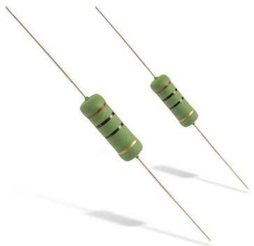
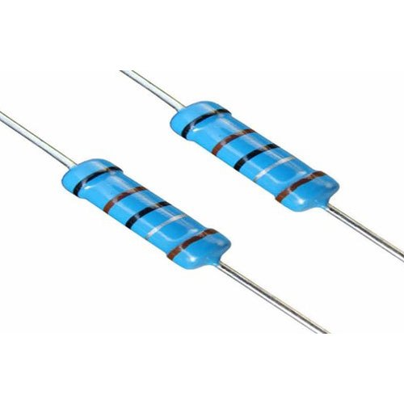
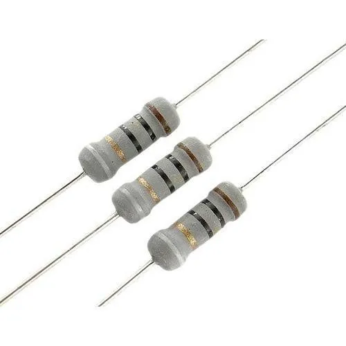
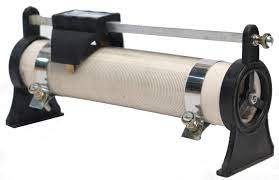

A linear resistor is an electronic component that follows Ohm's Law, which states that the current (I) flowing through a resistor is directly proportional to the voltage (V) across it, given a constant resistance (R).
There are two types of linear resistor
1.Fixed Resistor
2.Variable Resistor.
A fixed resistor is an electronic component that resists the flow of electric current and has a fixed or constant resistance value.The resistance of a fixed resistor does not change under normal operating conditions.
1.Carbon Composition Resistor: Made from a mixture of carbon granules and an insulating material. Inexpensive but can have tolerances that are not as tight as other types. Used in general-purpose applications.

2.Carbon Film Resistor: Consists of a thin film of carbon deposited onto a ceramic substrate. More stable and has better tolerances compared to carbon composition resistors. Widely used in electronic circuits.

3.Metal Film Resistor: Made by depositing a thin film of metal (typically nickel-chrome or tin oxide) onto a ceramic substrate. Offers higher stability, lower noise, and tighter tolerances compared to carbon film resistors. Commonly used in precision applications

4.Metal Oxide Film Resistor: Similar to metal film resistors but uses a metal oxide film. Provides stable performance, low noise, and is suitable for high-temperature environments. Often used in power electronics and high-performance applications.

5.Wirewound Resistor: Constructed by winding a wire (usually nichrome) around a ceramic or fiberglass core. Offers high precision and can handle high power loads. Used in applications where precise resistance values and power dissipation are critical.
6.Thick Film Resistor: Made by depositing a thick layer of resistive material onto a ceramic substrate. Economical and suitable for surface mount technology (SMT) applications. Found in a variety of electronic devices.
7.Fusible Resistor: Designed to act as a safety device by intentionally breaking the circuit if the current exceeds a certain limit. Contains a fusible link that melts when excessive current flows through the resistor, opening the circuit.
A variable resistor is an electronic component that allows for the manual adjustment of electrical resistance within a circuit. It is also known as a potentiometer or rheostat, depending on its specific application.
1.Potentiometer: A three-terminal variable resistor used to adjust voltage. It allows the user to tap into different points along the resistive element. Typically used for volume controls, tone controls, and other applications where variable voltage division is needed. Common types include linear potentiometers (for linear resistance change) and logarithmic or audio-taper potentiometers (for audio applications where the human ear perceives loudness logarithmically).

2.Rheostat: A two-terminal variable resistor used to control current. It is often used to adjust the brightness of lamps or the speed of motors. Consists of a resistive wire or a coil and a wiper that moves along the wire, changing the effective resistance.
3.Trimmer Resistor: Trimmer resistors are generally smaller in size compared to standard potentiometers, making them suitable for applications where space is limited.